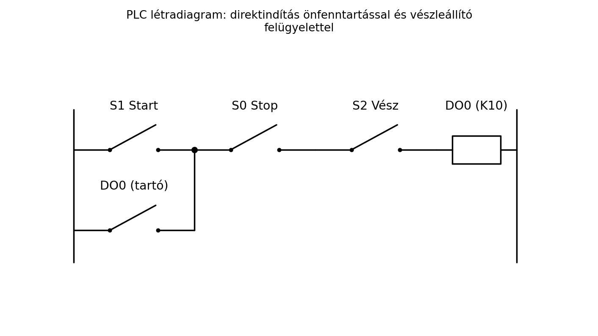

A kapcsolódó elmélet: tankönyv, 32.6 alfejezet.
Példa. Egy háromfázisú szivattyúmotort kell PLC-vel vezérelni. A vezérlési feltételek: - Start gomb (S1, NO) és Stop gomb (S0, NC) a PLC bemeneteire csatlakozik. - Vészleállító (S2, két bontóérintkezős): az 1. NC érintkező sorosan a K1 mágneskapcsoló tekercsének 230 V AC körében van (a segédrelé NO érintkezőjével sorban), így a PLC-től függetlenül bontja a kört; a 2. NC érintkező a PLC bemenetére csatlakozik (felügyelet). A kockázatértékeléstől függően biztonsági relé alkalmazandó (ellenőrizendő: MSZ EN 60204-1, MSZ EN ISO 13850). - A PLC DO0 kimenete a K10 jelű 24 V DC segédrelét vezérli, amely a K1 mágneskapcsolót kapcsolja. - Az önfenntartást a program valósítja meg.
Bekötési terv (szöveges leírás): - 24 V DC tápegység: +24 V a PLC tápfeszültségére (L+), 0 V a PLC M jelű kapcsára. - S1 Start gomb egyik kapcsa a PLC DI0 bemenetre, másik kapcsa a +24 V-ra. - S0 Stop gomb egyik kapcsa a DI1 bemenetre, másik kapcsa a +24 V-ra. - S2 vészleállító 2. NC érintkezőjének egyik kapcsa a DI2 bemenetre, másik kapcsa a +24 V-ra (felügyelet). - A PLC DO0 kimenete egy K10 segédrelé tekercsét vezérli; a segédrelé egyik kapcsa a PLC DO0-ra, másik kapcsa a 0 V-ra. - A K10 segédrelé NO érintkezője a K1 mágneskapcsoló tekercsének 230 V AC körét kapcsolja, sorban az S2 vészleállító 1. NC érintkezőjével.
A bekötési tervet huzalozási nézetben az alábbi ábra mutatja. A nyomógombok egyik kapcsa a +24 V-on van, a másik a bemenetre megy, ezért a bemeneti közös kapocs (1M) a 0 V-ra (M) kerül; a relés kimenet csoportjának közös kapcsára (1L) a kapcsolt +24 V jut, így a DO0 bekapcsolásakor a K10 tekercse feszültséget kap. A K10 egyenáramú tekercsével párhuzamosan szabadonfutó dióda (D) van (a katódja a + oldalon), lásd a Mágneskapcsolók és relék (tankönyv, 31.2) alfejezetet. A K1 230 V-os tekercskörében a vészleállító 1. bontója és a K10 záró érintkezője sorosan van: a vészleállító így a PLC-től függetlenül bont.
A bekötés ellenőrzésekor a 24 V-os és a 230 V-os kört külön kezeld: a 230 V-os tekercskört csak jogosult személy felügyeletével szabad bekötni és kipróbálni. A HTML-kiadásban a rétegek (24 V DC táp, bemenetek, kimenet, 230 V AC kör) külön ki-be kapcsolhatók.
A létradiagram:

A létradiagram itt a Start gomb és az önfenntartó DO0 érintkező párhuzamos kapcsolását, majd a Stop és vészleállító soros kapcsolatát mutatja. Ha a Start gombot megnyomják, a DO0 kimenet (K10 segédrelé) bekapcsol (logikai 1), és a DO0 tartóérintkező lezár. Amíg a Stop és a vészleállító nincs benyomva, a DO0 bekapcsolva marad.
Számítási ellenőrzés. A PLC bemeneti áramát a bemeneti ellenállásból számíthatjuk. Ha a bemeneti ellenállás 4,7 kΩ és a tápfeszültség 24 V:
Ez az érték a PLC bemeneti adatlapján szereplő tipikus tartományba esik (általában 3–10 mA), így a nyomógomb érintkezője megfelelő. A relés kimenet terhelhetőségét is ellenőrizni kell: ha a segédrelé tekercsének árama 30 mA, a PLC kimenet névleges 2 A terhelhetősége bőven elegendő, de a gyártói adatlapot mindig meg kell nézni (ellenőrizendő: gyártói adatlap).
Cél. Egy PLC digitális bemeneteinek és kimenetének bekötése, valamint egy egyszerű önfenntartó motorindítás létradiagramjának elkészítése.
Eszközök és anyagok: - PLC (24 V DC tápfeszültségű, legalább 4 digitális bemenet és 1 relés kimenet) - 24 V DC tápegység - Start nyomógomb (NO), Stop nyomógomb (NC), vészleállító (NC) - Segédrelé 24 V DC tekercssel és NO érintkezővel - Mágneskapcsoló (a motor vezérléséhez, a tanműhelyben lehet szimulált terhelés) - Huzalok, érvéghüvelyek, sorkapcsok - Multiméter, programozó eszköz (PC vagy programozópanel) - A PLC programozószoftvere
Biztonsági korlát. A feladat tanműhelyi (törpefeszültségű) környezetre vagy jogosult oktató felügyeletére vonatkozik; hálózati feszültségen önállóan ne végezd. A kapcsolószekrényben 230/400 V is jelen lehet, ezért a munkát csak feszültségmentesítés után kezdd el.
Az öt biztonsági szabály: 1. Lekapcsolás: a kapcsolószekrény főkapcsolóját kapcsold ki. 2. Visszakapcsolás elleni biztosítás: lakatold le a főkapcsolót, vagy távolítsd el a biztosítékokat. 3. Feszültségmentesség ellenőrzése: ellenőrizd a 24 V DC és a 230/400 V AC áramköröket is. 4. Földelés és rövidre zárás: a hálózati feszültségű oldalon csak akkor, ha az előírás megköveteli; a tanműhelyi gyakorlatnál általában elegendő a feszültségmentesítés és a visszakapcsolás elleni biztosítás. 5. Szomszédos feszültség alatti részek lefedése: ha a szekrényben más áramkör feszültség alatt marad, takard le.
Lépések:
1. feladat (A) Sorold fel a PLC fő részeit, és magyarázd el egy-egy mondatban a szerepüket!
2. feladat (A) Egy PLC bemeneti ellenállása 6,8 kΩ, a bemeneti feszültség 24 V DC. Számítsd ki a bemeneti áramot! Mekkora teljesítményt vesz fel a bemenet?
3. feladat (B) Készíts létradiagramot egy kútszivattyú vezérléséhez: a szivattyú akkor indul, ha a Start gombot megnyomják, és a tartály szintje alacsony (S4 szintérzékelő NO érintkező zár). A szivattyú önfenntartással működik, és leáll, ha a Stop gombot megnyomják, vagy a tartály megtelik (S5 szintérzékelő NC érintkező nyit). A vészleállító (S6 NC) szintén leállítja.
4. feladat (B) Rajzold le egy PLC bekötési vázlatát: Start gomb a DI0, Stop gomb a DI1, vészleállító a DI2 bemenetre; a DO0 kimenet egy 24 V DC segédrelét vezérel. Jelöld a tápegység csatlakozásait is.
5. feladat (C) Egy PLC-s motorvezérlésben a vészleállító benyomásakor a motor nem áll le. Sorold fel a lehetséges okokat, és add meg a hiba behatárolásának lépéseit!
6. feladat (D) A tanműhelyben a PLC programja fut, a Start gomb megnyomásakor a DO0 kimeneten nem jelenik meg feszültség. A PLC bemenetén a DI0 jel megjelenik (a bemeneti LED világít). Ismertesd a hibakeresés lépéseit, és jelöld meg, melyik hibát hogyan lehet kizárni!
Írd fel mindegyikhez a programot létradiagramként vagy logikai kifejezésként. NC jeladónál a bit nyugalomban 1. A vészleállító és a hardveres reteszek minden feladatban a PLC-től függetlenül is megvannak.
7. feladat (A) Direktindítás üzemjelzéssel: H1 világítson, amíg a motor vezérelve van. I/O: DI0 = S0 STOP (NC), DI1 = S1 START (NO), DO0 = K1, DO2 = H1.
8. feladat (A) Indítás és leállítás két helyről. I/O: DI0 = S1.1, DI1 = S1.2 (NO); DI2 = S0.1, DI3 = S0.2 (NC); DO0 = K1.
9. feladat (A) Önfenntartás SET/RESET tekercsekkel, törlés-domináns módon. I/O: DI0 = S0 (NC), DI1 = S1 (NO), DI3 = F1 95–96 (NC); DO0 = K1.
10. feladat (B) Zavarjelzés: a hőkioldó kioldásakor a H2 1 Hz-cel villogjon a nyugtázásig. I/O: DI3 = F1 95–96 (NC), DI4 = S6 nyugtázó (NO); DO3 = H2.
11. feladat (B) Reverzálás programbeli retesszel és 1 s-os irányváltási tiltással (TOF). I/O: DI0 = S0 (NC), DI1 = S1 előre, DI2 = S2 hátra (NO), DI3 = F1 (NC); DO0 = K1, DO1 = K2.
12. feladat (B) Csillag–delta indítás 6 s csillagidővel, 50 ms átkapcsolási szünettel, deltaüzemben H1 jelzéssel. I/O: DI0 = S0 (NC), DI1 = S1 (NO), DI3 = F1 (NC); DO0 = K1, DO1 = K2 csillag, DO2 = K3 delta, DO3 = H1.
13. feladat (C) A szalag 10 darab elhaladása után álljon le; nyugtázás után indítható újra. I/O: DI0 = S0 (NC), DI1 = S1 (NO), DI2 = B1 darabérzékelő (NO), DI4 = S7 nullázás (NO); DO0 = K1.
14. feladat (C) Három szalag: indítás K1 (végső fogadó), 3 s múlva K2, további 3 s múlva K3 (etető); leállításkor a K3 azonnal, a K2 8 s, a K1 további 8 s múlva áll le. I/O: DI0 = S00 azonnali STOP (NC), DI1 = S1 START, DI2 = S0 leállítás (NO); DO0–DO2 = K1–K3.
15. feladat (C) Kétpontos szivattyúvezérlés KÉZI–0–AUTO választóval és szárazonfutás-védelemmel. I/O: DI0 = S0 (NC), DI1 = S1, DI2 = B1 alsó úszó (NO, 1 = alacsony szint), DI3 = B2 felső úszó (NC), DI4 = S3 KÉZI, DI5 = S3 AUTO, DI6 = B3 szárazonfutás-védő (NC), DI7 = Q2 13–14; DO0 = K1.
16. feladat (D) Üzemóra-számláló: a motor minden 500 üzemórája után kérjen karbantartást a H2 lámpa, nyugtázásig. I/O: DI6 = K1 43–44 visszajelzés, DI4 = S7 nyugtázó; DO3 = H2.
Önellenőrzés – válaszok:
Feladatok megoldásai:
1. feladat (A) A PLC fő részei: CPU (program tárolása és végrehajtása), bemeneti egység (külső jelek fogadása és leválasztása), kimeneti egység (beavatkozók vezérlése), tápegység (belső feszültségek előállítása), kommunikációs interfész (programozás, felügyelet, adatcsere).
2. feladat (A)
Adott:
,
.
Keresett:
,
.
.
.
Ellenőrzés: a bemeneti áram tipikusan 3–10 mA, így az érték reális.
3. feladat (B) A létradiagram (szöveges
leírás):
- 1. sor: [Start gomb (NO) → S4 alacsony szint (NO)] párhuzamosan K1
önfenntartó érintkezővel (NO) → S5 tele szint → S6 vészleállító → Stop
gomb → K1 tekercs (az S5, S6 és a Stop fizikailag NC jeladó, a
programban NO kontaktussal vizsgáljuk).
A sorrend lényeges: az S4 csak az indítást engedélyezi (a Start-tal
sorosan, az indítóágban); a tartóág a tele szintig fenntartja a
szivattyút, így az szintemelkedéskor sem áll le idő előtt (kétpontos
szabályozás: alsó szinten indul, felsőn áll le).
4. feladat (B) A bekötési vázlat (szöveges
leírás):
- 24 V DC tápegység + kimenete a PLC L+ és a nyomógombok közös
pontjára.
- 0 V a PLC M-re.
- Start gomb másik kapcsa DI0, Stop gomb másik kapcsa DI1, vészleállító
2. NC érintkezőjének másik kapcsa DI2 (az 1. NC érintkező a
mágneskapcsoló tekercsének 230 V-os körében van).
- DO0 a segédrelé tekercs egyik kapcsára, a másik kapocs a 0 V-ra.
- A segédrelé NO érintkezője és sorosan a vészleállító 1. NC érintkezője
a mágneskapcsoló tekercs áramkörébe.
5. feladat (C) Lehetséges okok:
- A vészleállító csak a PLC bemenetére van kötve, és a PLC program a
kimenetet nem tiltja le (vagy a PLC lefagyott).
- A vészleállító érintkezője rosszul van bekötve (pl. NO helyett NC,
vagy a hardveres áramkörben nincs benne).
- A mágneskapcsoló tekercs áramköre nem a vészleállítón át megy, hanem
közvetlenül a tápfeszültségre van kötve.
- A PLC kimenete nem kapcsol le (pl. ragasztott reléérintkező a PLC
kimenetén).
Behatárolás: feszültségmentes állapotban ellenőrizni a bekötést, a
vészleállító érintkezőjének működését multiméterrel, és a PLC programban
a bemenet állapotát.
6. feladat (D) Hibakeresés lépései:
- Ellenőrizd, hogy a PLC RUN üzemmódban van-e.
- Nézd meg a DO0 kimeneti LED állapotát a PLC-n. Ha világít, a hiba a
kimeneti áramkörben van (pl. a segédrelé nem húz be, vagy a kimenet
terhelése meghaladja a határt).
- Ha a DO0 LED nem világít, ellenőrizd a programot: a létradiagramban a
DI0 érintkező helyesen van-e, a Stop és a vészleállító kontaktusok a
hardveres NC gomboknak megfelelően NO kontaktusként szerepelnek-e, és az
önfenntartás megvan-e.
- Ellenőrizd a 24 V DC tápfeszültséget a kimeneti közös ponton.
- Multiméterrel mérj feszültséget a DO0 és a 0 V között, amikor a Start
gomb aktív. Ha nincs feszültség, a program logikája hibás, vagy a
kimenet nem lett hozzárendelve.
7–16. feladat – mintamegoldások. Más helyes megoldás is lehet. Mindegyiknél érvényes: a vészleállító a PLC-től függetlenül bontja a kontaktorköröket, a hardveres reteszek megmaradnak. Az időzítő jelölése: TON, TOF; IN a bemenet, Q a kimenet, PT az idő.
7. ; . A kontaktor tényleges állapotát a 43–44 visszajelzés mutatná.
8. .
9. 1. sor: felfutó éle SET DO0. 2. sor: RESET DO0. A törlő sor áll később, ezért egyidejűleg a törlés érvényesül; az élre indítás megakadályozza, hogy a beragadt START újraindítson.
10. : SET, ha ; RESET, ha (csak megszűnt hiba nyugtázható). Ütemadó: T1 (TON 0,5 s) ; T2 (TON 0,5 s) ; .
11. T1 (TOF 1 s) ; T2 (TOF 1 s) . ; . A T1.Q a HÁTRA leállása után még 1 s-ig tiltja az ELŐRE irányt (és fordítva).
12. ; T1 (TON 6 s) ; ; T2 (TON 50 ms) ; ; .
13. C1 (CTU, PV = 10): (felfutó él), . . A darabimpulzus legyen hosszabb a ciklusidőnél.
14. M0 („leállítás folyik”): SET, ha ; RESET, ha . ; T1 (TON 3 s) ; ; T2 (TON 3 s) ; ; T3 (TON 8 s) ; T4 (TON 8 s) .
15. Kézi bit: . Automata bit: . . AUTO-ban a szivattyú feszültség-visszatéréskor magától indulhat: ez csak kockázatértékelés alapján, figyelmeztető jelzéssel engedhető meg.
16. T1 (TON 60 s) (percenként egy impulzus); C1 (CTU, PV = ): , ; . A számlálót remanens (kikapcsoláskor megőrzött) memóriába kell tenni, és a leálláskor elveszett tört percek miatt pontosabb a megőrző időzítő vagy a rendszer üzemóra-funkciója (gyártófüggő).